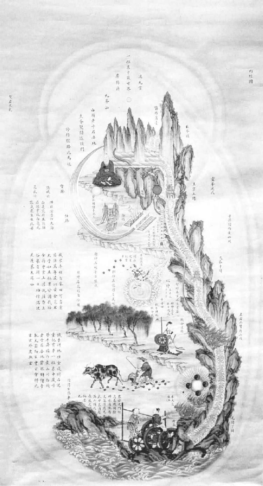
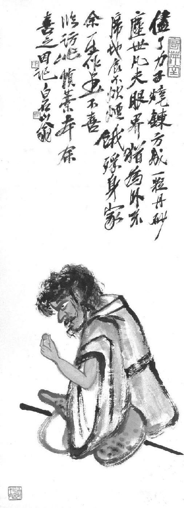

第十七章 瑜伽与炼丹
东坡曾经说：“未有天君不严而能圆通觉悟者也。”解脱，或佛道，皆始于此心的自律。人在能获得心的宁静之前（心情宁静便是佛学上之所谓解脱），必须克服恐惧、恼怒、忧愁等感情。在黄州那一段日子，苏东坡开始钻研佛道，以后的作品也就染上了佛道思想的色彩。他潜心研求灵魂的奥秘。他问自己，人如何才能得到心情的宁静？有印度的瑜伽术，有道家的神秘修炼法，为人提供精确的心灵控制法，保证可以达到情绪的稳定，促进身体的健康，甚至——当然是在遥远的以后——发现长生不死的丹药。对于身体的不朽呢？他对寻求长生之术十分着迷。人身的不朽与精神的不朽是不应当截然划开的，因为不管对身体如何看法，身体只不过是个臭皮囊。精神若经过适当的修炼，早晚会抛下这个臭皮囊而高飞到精神界去。身体的不朽，退一步说，至少包括一个可修炼得到的目标，就是延缓衰老，增长寿命。
所谓长寿秘诀，包括很多因素与目的，以及瑜伽、佛道及中国医学传统的要素。长寿的目的包括身心两方面。在身体方面，其目的在求容光焕发的健康、体格精力的强壮，以及祛除缠绵的痼疾；精神方面，在于求取心灵和情绪的稳定以及灵魂元气的放发。再加上朴质的生活，某些中药的辅助，便可返老还童，享受长寿，这些在道家看来，就与长生术在不知不觉中融合起来。简单说，这种方法在中国叫作“养生术”或是“炼丹”。所寻求的丹，是内外兼指。“内丹”，按照道教的办法，是练肚脐以下部位；“外丹”是中国炼丹家所寻求的一种长生不死之药，一旦得到手而服用之，便可骑鹤升天。外丹中最重要的成分是汞的合金。在这一点上，长寿术和炼金术却混而为一了，完全与欧洲的炼金术相似。当然，对一个哲学家而言，人若高寿而健康，又有黄金花费，到天堂去反倒成为次要，因为还有什么要请求上帝的呢？
苏东坡的弟弟子由练瑜伽术倒走在他前面，根据子由自己的话，是在神宗熙宁二年（一〇六九年），他从一个道士学的，这个道士是给苏东坡的次子看病，方法是吹“神”入腹。子由到淮阳送兄长到黄州时，苏东坡发现弟弟外貌上元气焕发。子由在童年时夏天肠胃消化不好，秋天咳嗽，吃药不见效。现在他说练瑜伽气功和定力，病都好了。苏东坡到了黄州，除去研读佛经之外，他也在一家道士观里闭关七七四十九天，由元丰三年冬至开始。在他写的《黄州安国寺记》里可以看出，他大部分时间都练习打坐。他在天庆观深居不出，则是练道家的绝食和气功，这种功夫反倒在道家中发展得更高深，其实是从印度佛教传入中国的。苏东坡同时给武昌太守写信，向他请教炼朱砂的方子。在他写的一首诗里，他说在临皋亭里已经辟室一间，设有炉火，以备炼丹之用。
他在给王巩的信里，道出他对修炼各方面的看法。
安道软朱砂膏，某在湖州服数两，甚觉有益。到彼可久服。子由昨来陈相别，面色殊清润，目光炯然，夜中行气脐腹间，隆隆如雷声。其所行持，亦吾辈所常论者，但此君有志节能力行耳。粉白黛绿者，俱是火宅中狐狸、射干之流，愿深以道眼看破。此外又有一事，须少俭啬……
《内经图》（又名《内景图》） 中国画 清 中国医史博物馆藏
养生是先秦道家几千年来的一贯思想。延年益寿，人同此心，世人于此莫不关注。中国现存养生术可分为通论、食养、导引、炼丹等几大类。养生的目的是延年益寿，康健无疾。这幅《内经图》就是用来帮助使用者修炼养生术而专门绘制的。
近有人惠丹砂少许，光彩甚奇，固不敢服，然其人教以养火，观其变化，聊以怡神遣日。宾（广西宾州，王巩今居此）去桂不甚远，朱砂若易致，或为致数两，因寄及，稍难即罢，非急用也。穷荒之中，恐亦有一二奇士，当以冷眼阴求之。大抵道士非金丹不能解化，而丹材多出南荒，故葛稚川（葛洪）乞岣嵝令，竟化于广州，不可不留意也。陈璞一月前，直往筠州看子由，亦粗传要妙，云非久当来此。此人不惟有道术，其与人有情义，久要不忘如此，亦自可重。道术多方，难得其要，然以某观之，惟能静心闭目，以渐习之，……似觉有功。幸信此语，使真气云行体中， 冷安能近人也？
印度瑜伽术功夫及其理论何以中国道家比中国佛家反易于吸收？其理亦至为简单。诚然，中国佛教中亦有禅宗一派，专下打坐功夫，为印度佛教与中国道教哲学之混合。不过，实由中国道教先有自然之基础，才能吸收瑜伽之要义。道家之特点在于重视自然的冥想沉思，重视由清心寡欲以求心神的宁静，尤其重视由修炼以求长生不老。在庄子《南华经》里，我们发现有几个词语，劝人凝神沉思，甚至于凝思内观，这显然是印度教的特性。即便我们退一步，承认这是后人篡改的，但此种篡改至晚已是在第三或第四世纪了。
在其他宗教里，再没有把宗教和身体锻炼结合得那么密切的。练瑜伽术时，由于控制身心，就导人入于宗教的神秘体会。其领域由控制反射和不随意肌，进而叩精神能力较深的境界。其益处为身心两面。由于采取身体的某种姿势与呼吸的控制，再继之以冥坐，瑜伽术的修炼者可以达到对宇宙巨大物体遗忘的心境，最后修炼者则达到物我两忘完全无思想的真空境界，其特点是恍惚出神的喜悦。修炼者承认此种喜悦的空虚状态只是暂时的，除非死亡才能继续。不过，这种恍惚的喜悦感确实是舒服，使练此功夫的人都愿尽量享受。现代练瑜伽术的印度人和中国人都承认他们获得的身体健康、心情宁静与情绪的均衡，都非以前梦想之所及。中国的修炼者不知道那是瑜伽，称之为“打坐”，或“静坐”“内省”“冥思”，或是其他佛道两家的名称。自然其他身体扭曲过甚的姿势，如“孔雀姿”“鱼姿”，中国学者以其过于费劲，拒而不学，而苏东坡也只是以练几个舒服姿势为满足，这未尝不可以说算是中国对瑜伽的贡献。
一般而论，我们在此并非对练习瑜伽术感兴趣，只是对苏东坡在元丰六年（一〇八三年）详细说明的瑜伽术练习有些好奇而已。那时，他对佛经道藏已然大量吸收，而且时常和僧道朋友们讨论。以他弟弟为法，他开始练气功和身心控制。对求长生不死之药的想法，他并不认真，即便没法得到，但对获得身体健康与心情宁静，他总是喜欢。须知道的是，中国人的养生之道在实际和理论上都和西洋不同。按中国人的看法，人不应当浪费精力去打球追球，因其正好与中国人的养生之道相违反，中国人的养生是“保存精力”。而瑜伽对身心卫生的方法最适合中国文人，因瑜伽的精义是休息，是有计划的、自己感觉得到的休息。不但规定在固定时间停止呼吸，并且身体采取休息的姿势，同时还要消灭静坐在臂椅中时头脑里自然的活动。练习瑜伽全部的努力，可以用简单而非专门的术语描写为——在于努力少思索，以至一无所思。最后这无所思乃是最难做到的。最初是集中思想于一点，这已经够难，因为人的头脑习惯于由这个思想转到另一个相关联的思想。使思想集于一点还是最低阶段；再高一点儿，使专心于一点进而到一点皆无的沉思，最后达到恍惚出神的愉快境界。
瑜伽的特点是全部身心的休息，再由于各种方式的控制呼吸以增加氧气的吸入。这时胃中轻灵无负担，浑身处于一完全放松的姿势，深深地呼吸，身体则保持于非常容易得到氧气的状态，而同时并不消耗同等量的精力。而别的运动则不然，所以说养生之道再没有如此理想的。因此，我们似乎可以了解，如果在万籁俱寂的深夜，在家中练这种功夫，人的头脑可以锐敏到感觉出自身内在的生理功能的活动。因为在最后阶段，人的心灵活动可以脱离自己而成为自己的观察者。在更为微妙的阶段，心灵以旁观者之身，可以观察两个思想之间那段空白。最后阶段，在心灵里一无所思，而能觉察比较微妙的次原子物质的形式，消除了一般人与自我的观念，这个阶段各宗教皆有其不同的宗教解释。一种解释是个人的灵魂与世界灵魂完全地融合，这正是印度教修炼的目标。但是，不管人对宗教的看法如何，瑜伽术使人获得的心境，虽然与睡眠和自我暗示状态相似，还是不同于此等状态，因为心灵还保持完全的自觉和反射的控制，而且瑜伽术的修炼者分明记得这种状态下发生的一切活动。
苏东坡在描写自己的修炼时，发现瑜伽术有很多明确的特点。他控制呼吸，似乎是脉搏跳动五次算呼吸的一周期。吸、停、呼的比率是1∶2∶2。停止呼吸最长的时间是“闭百二十至而开，盖已闭得二十馀息也”，照印度的标准，较低的限制是大约一百四十四秒。像一般瑜伽的修炼者一样，他计算他的呼吸周期，也和他们一样，他自称在控制呼吸时（吞吐比例规则）有一段时间完全自动而规律。在集中注意力时，他也是凝神于鼻尖，这是瑜伽的一个特点。他也描写了一种为人所知的瑜伽感觉，在此一期间，心灵完全休息，再加上内在知觉的高度锐敏，他觉察到脊椎骨和大脑间的振动，以及浑身毛发在毛囊中的生长。最后，在他写的那篇《养生诀》里，他描写此种状态的舒服，与从此种运动所获得心灵宁静的益处。
关于此种运动的心灵方面，他的修炼仍是瑜伽术。在给弟弟子由的一封短信里，他描写正统瑜伽默坐的目的。他认为从感官解脱出来之后，真正体会到真理，或上帝，或世界的灵魂，不是在于看到什么，而是在于一无所见。他致子由的信如下：
任性逍遥，随缘放旷，但尽凡心，无别胜解。以我观之，凡心尽处，胜解卓然。但此胜解，不属有无，不通言语，故祖师教人，到此便住。如眼翳尽，眼自有明，医只有除翳药，何曾有求明方？明若可求，即还是翳。……而世之昧者，便将颓然无知，认作佛地。若如此是佛，猫儿狗子，得饱熟睡，腹摇鼻息，与土木同，当恁么时，可谓无一毫思念，岂可谓猫儿狗子已入佛地？……今日闹里忽捉得些子。……元丰六年三月二十五日夜。
据我所知，苏东坡赋予了瑜伽几项中国要素。他不但排除了那些弯曲腰、腿、脖子等类似特技的动作，以及其他粗怪的扭曲动作，而且增加了定时地咽唾液，这完全来自道家合乎生理的心得。他向张方平推荐他的修炼方法，在信里他这样描写：
每夜以子后披衣起，面东或南，盘足，叩齿三十六通，握固，闭息，内观五脏，肺白、肝青、脾黄、心赤、肾黑。次想心为炎火，光明洞彻，入下丹田中。待腹满气极，即徐出气。候出入息匀调，即以舌接唇齿，内外漱炼津液，未得咽下。复前法。闭息内观，纳心丹田，调息漱津，皆依前法。如此者三，津液满口，即低头咽下，以气送入丹田。须用意精猛，令津与气谷谷然有声，径入丹田。又依前法为之。凡九闭息，三咽津而止。然后以左右手热摩两脚心，及脐下腰脊间，皆令热彻。次以两手摩熨眼、面、耳、项，皆令极热。仍按捏鼻梁左右五七下，梳头百馀梳而卧，熟寝至明。
吞咽唾液是根据下面生理的推论，与道家五行宇宙论密切相关，我们未免觉得怪诞，可是对相信此种宇宙论的人则颇有道理。苏东坡所写最难懂的一篇散文叫《续养生论》，在这篇文章里，他把中国极其难懂的古语“龙从火里出”“虎向水中生”解释得十分令人满意。苏东坡说，我们随时都在消耗自己的精力，主要是两种方式：第一为火，包括种种情绪上的纷扰，如恼怒、烦闷、情爱、忧愁等；第二为水，包括汗、泪等排泄物。在道家的宇宙论里，火用虎代表，水用龙代表。代表火或控制火者为心，代表水者为肾。根据苏东坡的看法，火代表正义，所以在心控制身体之时，其趋势是善。另一方面，人的行动若受肾控制，其趋势则为邪恶（“肾”一字在中国包含性器）。所以肾控制人体之时，人就为兽欲所左右，于是“龙从水中生”，意即毁损元气。在另一方面，我们就受心火所引起的情绪不宁所骚扰了。我们怒则斗，失望忧愁则顿足，喜则舞。每逢情绪如此激动，身上的精力元气则由心火而焚毁，此之谓“虎从火里出”。照苏东坡说，这两种毁损元气都是“死之道也”。因此我们应当借心神的控制，一反水火正常的功能，而吞咽唾液是把心火向肾方面压下去之意。
此外，道家还努力追求外丹，又名“方士丹”，也就是“仙丹”，即长生不死之药。像欧洲的炼金术士一样，中国道士求方士丹，一为变低级金属为纯金，一为返老还童，恢复青春。也和欧洲的炼金术士一样，中国道士也主要用汞的化合物来制炼。因为汞的特殊性质——有如金属的光泽，重量大，其比重近于黄金（原子量各自为二百、一百九十七），比较易于流动，以及金属物，如金与铜，因接触而混合，还有变成气体、粉末、液体等有趣的变化——因此，这种金属自然引起炼金术士的注意，不管东方、西方，都认为是最容易炼成人造金的原料。在苏东坡时代，中国的炼金术大部分是受阿拉伯的影响，就和欧洲一样。但是在汉代却有记载，说有中国人炼金成功，我们想大概是用金的化合物炼的。在晋朝有道士葛洪，曾说用金与水银炼制成药，可延缓衰老或死亡。他说：“凡草木烧之即烬，而丹砂烧之成水银，积变又还成丹砂，其去凡草木亦远矣，故能令人长生。”他又说丹分为九品，按炼制程序而效力不同。最精者人服后三日成仙，最次者则需时三年。炼丹之原料为朱砂、白矾、雄黄（硫化砷）、磁石，以及曾青。
《春渚纪闻》的作者何薳——他父亲曾由苏东坡推荐为官——曾在书中以一章之多的篇幅记载长生不死之药，有关长生不死之药的种种情形当时很流行。何薳所说的几个人，本书上已经提过，另有几个人是何薳的亲戚，其中有数则故事是作者经验之谈。此书和一本叫《苏沈良方》的书（传为苏东坡与沈括合编），记载过一切炼丹的方法。若读完那些故事和炼丹方法，就会得到下列的印象。总是有一座炼丹炉，炼丹者用水银、硫黄、铜、银、砷、合金、硝酸盐，或是硝石炼制，也许他们还试试硫化金。硫化汞（朱砂）和硫化金都可用作红颜料。各类汞合金还当药物服用。按当时并不可靠的记载，不少的道士都有化铜成金的秘方。必然有造出紫红色的金化合物，铸成各式器皿，曾经大发其财。也可能有道士在铜器上涂水银，当作银子卖与无知乡民。他们将金汞融合，自然不是难事。他们又将硫和汞混合，称为“黄金”，又称为“死硫”。
有一个故事流传，说有一个道士确能造出真金，京都的商人都试不出是伪造。由于何薳的记述，我相信那个道士用的是金矿砂，他能从其中提炼黄金。其中诡诈之处是道士说他用的是一种铜砂，所以用铜变黄金的说法自然就轰动了。他能向何薳的一个亲戚表演铜变金。他说那矿砂是铜，他说他以铜砂状携带，而不以纯铜，是因为纯铜在路途中有被偷窃的危险。那矿砂在火上加热，但并不熔化。等道士在锅中放入一点儿白色粉末，结果变成了黄金。
道士的经历是这样：道士和两个朋友在多年前决定各奔前程，约定十年之后在某处相会。他们在中间这段日子分头去寻求方士丹的秘诀，等再度相遇，便大家共享此一秘诀。如今寻到此秘诀的人自己并没做富商，已然出了家。下面便是他的经过。
几个朋友在指定的地方相会时，大家比较寻求的结果。已经出家的那个道士告诉朋友他已得到妙诀，只是所炼成品尚含有杂质，有欠精纯。一个朋友说他已得到一种药粉，可以除去杂质。只要加上此一药粉，他们就可以炼出纯金了。
几个朋友说：“咱们到京都去。听说京都栾家金店为国内最大金店，若能禁得起他们的试验，咱们的秘诀就算对了。”他们拿了十两自己炼出的黄金求售。店家将黄金检查、过秤、用火烧，然后按真金价格付了款。朋友很快乐，如此成功，彼此相贺。彼此相向说：“现在咱们可以成仙了。我们若不愿弃却红尘，可以用此钱吃喝玩乐。咱再炼一百两分用吧。”
那天晚上，大家痛饮，有几分醉意。把铜矿砂放在炼丹炉里就去睡了。夜里，铜水四溅，引起火烧着房子。三个人还沉醉未醒，救火队已经来临。“我睡得不太沉，从火焰里逃出来。我怕被捕，又善于游水，就跳进汴河，顺水游下。我料想城门上锁之后，才爬上岸来。在水里时，我向上苍祷告，我忏悔，说我决心出家，再不做此勾当，绝不再为自己炼金子。若是修庙筹款，我一定要炼，但也要先求神答应。”这就是为什么那个道士不能将炼金术泄露出来的缘故，但若为行善，他百两也乐捐。他那两个朋友，一个被火烧死，一个为官方逮捕，不久因伤重而死。
苏东坡对于各种硫化汞药剂特别有兴味。因为大家都知道汞有毒，所以他试验那些药物时，特别警觉。因为那些药物的制造秘诀不为人知，其中什么成分谁也不太清楚。与东坡同时代的一个人记载过一人因吞服汞化药物而亡，那是因为他要在皇帝面前试验一个药方。也许他是要服氧化亚汞，却误服了氯化汞吧。再者道家也试验别的化学物，如硝石、硫黄等，甚至由钟乳石提炼出石灰质来吃，有时引起溃疡。苏东坡本人吃两种别的食物，据说是仙家的食物，就是茯苓和芝麻。芝麻多油，并含有定量的蛋白质，自然有食物价值。但是我有几分相信，此种东西被认为是仙家食物，主要是因为道士住在山上，不易找到别的食物。植物生长得越远，越与普通的五谷杂粮不同，就越会被认为是仙家食物。关于炼制外丹，苏东坡写了两篇札记，一篇叫《阳丹诀》，一篇叫《阴丹诀》。阴丹是从生第一胎男婴的母乳中提炼出来的。把乳在文火上加热，用的锅是银汞合金制成的，一边加热，一边用同一金属制的调羹缓缓搅动，直到奶凝结，最后制成药丸状。阳丹是用尿蛋白中的尿素制成。此一蛋白沉淀物经过多次净化，最后变成白色无味的粉状物，再加枣泥做成药丸，空腹用酒送服。
苏东坡直到他人生的末日，一直想求得方士丹；不过他对寻求长生不死之药还没有入迷。所有的道家仙子都已死去，至少他们每个人都遗留一个臭皮囊，虽然还有学说主张他们的身体已经改变，无人在时，他们可以升天，或骑鹤而去，或自己变成鹤飞去，叫作“羽化”，所遗留的躯壳便与他们的仙体杳不相干了。遗留下的躯壳只看作如蝉或蛇脱下的皮，此种去世他们名之曰“蝉蜕”，但是苏东坡却想看到一个长生不死的人。他说：自省事以来，闻世所谓道人有延年之术者，如赵抱一、徐登、张元梦，皆近百岁，然竟死，与常人无异。及来黄州，闻浮光有朱元经尤异，公卿尊师之者甚众，然卒亦病，死时中风搐搦。但实能黄白，有馀药、金皆入官。不知世果无异人耶？抑有，而人不见，此等举非耶？不知古所记异人虚实，无乃与此等不大相远，而好事者缘饰之耶？姑且把求取方士丹这种徒劳无功的事摆在一旁，我个人则认为道家谆谆教人的养生术和现代医生对人的忠告，在原理上无何差异。我看还是忘记这种无益的追求，回到单纯有节制的生活上来吧，要有足够的工作、足够的休息，最主要的还是无忧无虑，避免心情上的紧张激动。换句话说，人只要遵从一般常理就好。苏东坡表现他那合乎情理的简单生活原理，只用下列他从古书上摘取下来的四条规则。有一张某向他请求长寿良方，他就写出下列的四句话：
一曰无事以当贵。 二曰早寝以当富。 三曰安步以当车。 四曰晚食以当肉。
夫已饥而食，蔬食有过于八珍。而既饱之馀，虽刍豢满前，惟恐其不持去也。若此可谓善处穷者矣，然而于道则未也。安步自佚，晚食为美，安以当车与肉为哉？车与肉犹存于胸中，是以有此言也。
我最喜爱苏东坡给李常的一封信，以常情的看法论节制与单纯。他说：
仆行年五十，始知作活。大要是悭尔，而文以美名，谓之俭素。然吾侪为之，则不类俗人，真可谓淡而有味者。又《诗》云：“不戢不难，受福不那。”口体之欲，何穷之有，每加节俭，亦是惜福延寿之道。此似鄙俗，且出于不得已。……住京师尤宜用此策也。一笑。
《炼丹图》 人物画 齐白石 现代
炼丹术是中国古代的一种特殊方术，又称炼金术。其中心目标是用人工方法制作能使人“长生不死”的丹药，或练成点石成金的技术。制作长生不老药和点化金银当然不可能达到，但是在无数次失败的过程中，倒是为后人积累了不少化学知识和操作经验。
李常现在已回到京师，连王巩也遇赦回到北方。皇帝现在深悔对反对派的惩处。也许是命运对人的嘲弄吧，苏东坡刚刚安定下来，过个随心如意的隐居式的快乐生活，他又被冲激得要离开他的安居之地，再度卷入政治的旋涡。蚂蚁爬上了一个磨盘，以为这块巨大的石头是稳如泰山的，哪知道又开始转动了。